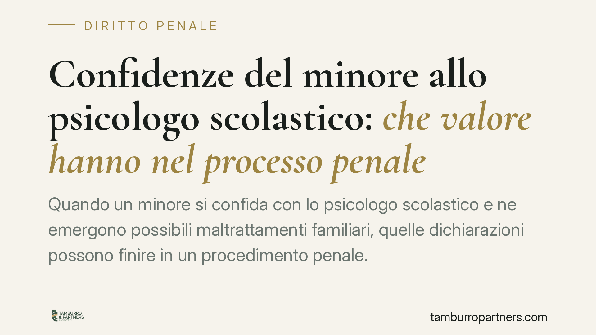

Confidenze del minore allo psicologo scolastico: che valore hanno nel processo penale
Quando un minore si confida con lo psicologo scolastico e ne emergono possibili maltrattamenti familiari, quelle dichiarazioni possono finire in un procedimento penale. La questione, tornata all'attenzione della giurisprudenza, riguarda la forma con cui tali elementi entrano nel processo: testimonianza indiretta o documento clinico. Una distinzione tecnica dalle conseguenze concrete rilevanti per l'imputato e per la tutela del minore.

Il contesto
Lo psicologo operante nelle scuole svolge una funzione di ascolto e sostegno. Nel corso di questa attività può raccogliere, dalla voce di un minore, elementi che adombrano condotte riconducibili al reato di maltrattamenti in famiglia (art. 572 c.p.). Quando ciò accade, si pone il problema di come quelle informazioni possano essere valorizzate in sede penale.
Il tema è delicato perché tocca il bilanciamento tra due esigenze: la tutela del minore vittima e il diritto dell'imputato a un processo che rispetti il contraddittorio. Segnaliamo che la pronuncia di legittimità richiamata in alcune fonti divulgative (indicata come Cass. pen. Sez. VI, n. 32437/2026) non risulta al momento verificabile su fonte ufficiale (CED/Italgiure) e appare cronologicamente anomala. Trattiamo quindi la questione in termini di principi consolidati, non di una singola massima non confermata.
Inquadramento normativo
Il nodo ruota attorno all'art. 195 c.p.p., che disciplina la testimonianza indiretta (de relato): il testimone che riferisce fatti appresi da altri è utilizzabile a condizioni precise, e il giudice, su richiesta di parte, deve chiamare a deporre la fonte diretta. La ratio è garantire che la dichiarazione originaria passi al vaglio del contraddittorio.
Se invece la relazione dello psicologo venisse qualificata come documento e acquisita al fascicolo per tale via, essa sfuggirebbe in parte al meccanismo dell'art. 195. Qui sta il punto controverso. Una relazione clinica che riporta testualmente le dichiarazioni del minore potrebbe comunque ricadere nei limiti della testimonianza de relato semplicemente documentata: la forma scritta non neutralizza la natura sostanziale di quanto riferito. La questione è aperta e va affrontata con prudenza.
Va inoltre tenuto presente l'art. 111 Cost., che eleva il contraddittorio nella formazione della prova a principio costituzionale. Ogni soluzione che comprima il diritto dell'imputato a confrontarsi con la fonte dichiarativa deve misurarsi con questo limite.
Funzione clinica e funzione investigativa
Un passaggio chiarificatore riguarda il ruolo dello psicologo scolastico. La Carta di Noto è un protocollo di buone pratiche per l'ascolto del minore in ambito giudiziario, pensato per preservare la genuinità della testimonianza. Secondo una lettura possibile, essa non si applicherebbe automaticamente ai colloqui scolastici, che nascono con finalità di cura e non investigativa.
La distinzione ha un fondamento: lo psicologo che accoglie un bambino in difficoltà non sta conducendo un'audizione protetta. Tuttavia, la diversa finalità iniziale non trasforma di per sé il contenuto in prova pienamente utilizzabile. Il colloquio clinico non segue le cautele dell'ascolto giudiziario proprio perché non è concepito come fonte di prova: ciò ne rende l'uso processuale potenzialmente fragile sul piano della genuinità.
Implicazioni pratiche
Per il genitore imputato in un procedimento per maltrattamenti, la forma con cui entrano le confidenze del figlio è decisiva. Se la relazione viene trattata come documento, la difesa rischia di non poter interrogare la fonte nelle forme ordinarie. Diventa quindi centrale eccepire la natura sostanzialmente dichiarativa del contenuto e sollecitare l'applicazione delle garanzie dell'art. 195 c.p.p.
Per chi tutela il minore e per i servizi sociali, vale l'esigenza opposta: documentare in modo rigoroso il contesto del colloquio, evitando che elementi raccolti con finalità di cura vengano poi contestati come inutilizzabili.
Cosa fare in concreto
- Verificate la qualificazione dell'atto: accertate se la relazione è stata acquisita come documento o come verbale di dichiarazioni, perché il regime di utilizzabilità cambia.
- Eccepite tempestivamente la natura de relato del contenuto, chiedendo l'escussione della fonte diretta ai sensi dell'art. 195 c.p.p.
- Richiamate l'art. 111 Cost. per sostenere la necessità del contraddittorio sulla prova dichiarativa.
- Valutate una consulenza tecnica sulla metodologia del colloquio, specie in assenza delle cautele proprie dell'ascolto protetto.
- Impostate la strategia probatoria nelle prime fasi del procedimento: le scelte iniziali sull'ammissione e sull'uso di questi elementi condizionano l'intero giudizio.
Disclaimer
Contributo informativo a cura di Tamburro & Partners Avvocati - Avv. Giuseppe Tamburro. Non costituisce parere legale.
Ogni condominio ha una storia a sé.
Se gestisci un'amministrazione e vuoi un confronto su una specifica questione condominiale, scrivi allo studio. Ti rispondiamo entro un giorno lavorativo.